왜 여러 전략을 섞을까요
이 영상은 같은 채널의 앞선 영상들(전략 하나를 만들고, 백테스트하고, 최적화하기)에 이어지는 편이에요. 발표자는 "진지하게 트레이딩하는 사람은 전략 하나만 돌리지 않는다"며, 여러 전략을 하나의 포트폴리오로 묶는 과정을 이론 슬라이드로 먼저 설명하고 후반에 주피터 노트북으로 같은 내용을 다시 보여 줘요. 이 문서는 주제별로 둘을 한데 모았어요.
출발점은 분산투자예요. 샤프비율이 같은 전략 N개를 평균 상관계수 ρ로 섞으면 기대수익은 그대로인데 포트폴리오 변동성이 줄어요. 그러니 샤프비율이 올라가요. 슬라이드 아래 표에서 가운데 줄(N=10)을 보면, 샤프 0.5짜리 전략 10개를 상관 0으로 섞으면 1.58, 상관 0.2면 0.94, 0.5면 0.67이에요.
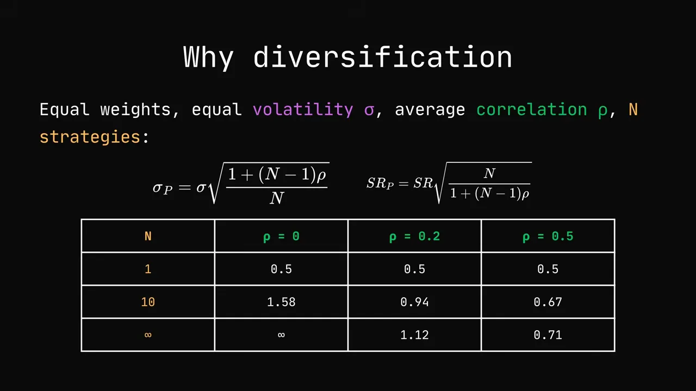
무한대 줄의 값은 SR / √ρ예요. 상관관계가 천장을 정한다는 뜻이에요. 그래서 발표자는 진짜 목표가 '더 많은 전략'이 아니라 '서로 덜 닮은 전략'이라고 정리해요.
이득은 앞쪽 10~15개에 몰려 있어요
다음 슬라이드는 상관 0.2일 때 전략 수에 따라 샤프비율이 몇 배가 되는지, 즉 분산 배수를 보여 줘요. DM(Diversification Multiplier) 줄을 왼쪽부터 읽으면 1 → 1.29 → 1.67 → 1.89 → 2.04 → 2.15 → 2.24예요. 1개에서 5개로 가면 67% 오르지만, 10개에서 50개로 가면 14%밖에 안 올라요.
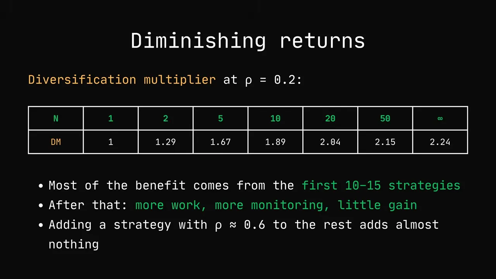
새 전략은 공짜가 아니에요. 개발하고, 실거래 환경으로 옮기고, 계속 지켜봐야 해요. 그래서 발표자는 실전에서 10~15개를 목표로 하고, 이미 가진 전략과 많이 닮은 새 전략은 대개 포트폴리오에 넣지 않아요.
노트북에서도 같은 그림이 나와요. 아래 그래프의 파란 선은 상관 0, 빨간 선은 0.2, 초록 선은 0.5일 때의 이론값이에요. 짧은 분홍 점선은 실습용 전략 12개(평균 샤프 0.74, 평균 상관 0.15)로 300번 무작위로 묶어 본 실제 값이에요.
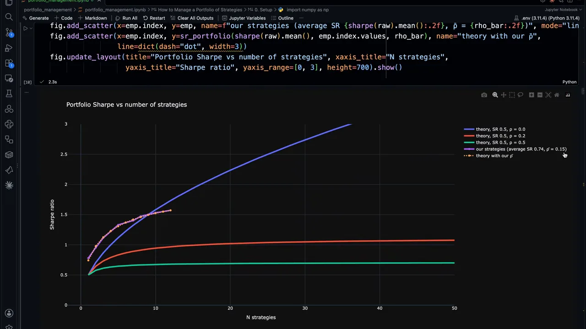
마지막으로 노트북은 '11번째 전략을 넣으면 샤프가 얼마나 바뀌나'를 새 전략의 상관에 따라 그려요. 선이 오른쪽 아래로 내려가요. 화면 맨 아래 출력에 숫자가 찍혀 있어요.
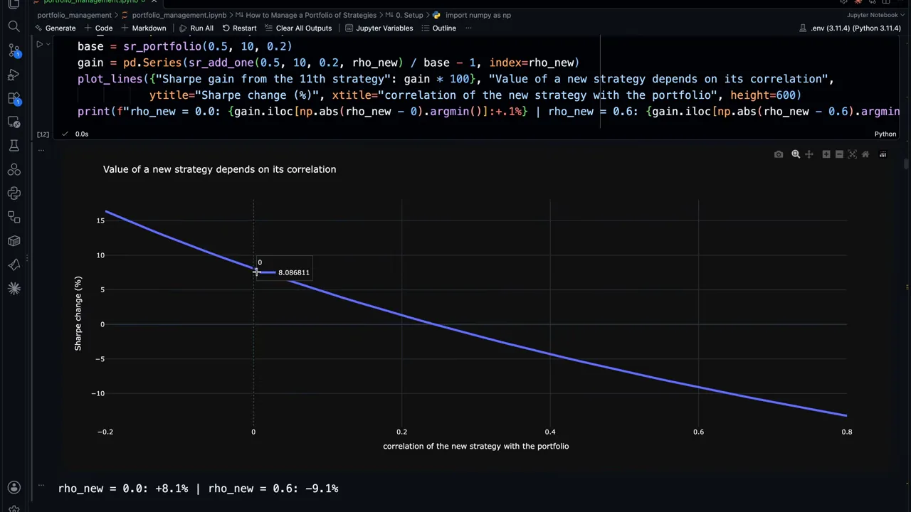
실습용 가상 전략 12개
후반부 노트북은 진짜 시장 데이터를 쓰지 않아요. 어떤 방식이 맞는지 판단하려면 '정답'을 알아야 해서, 전략의 진짜 실력을 미리 정해 두고 데이터를 직접 만들어요. 아래 표가 그 설정이에요. 열은 왼쪽부터 계열(trend·meanrev·other), 종목, 자산군, 승률, 시장 노출, 원래 변동성, 진짜 샤프비율이에요.
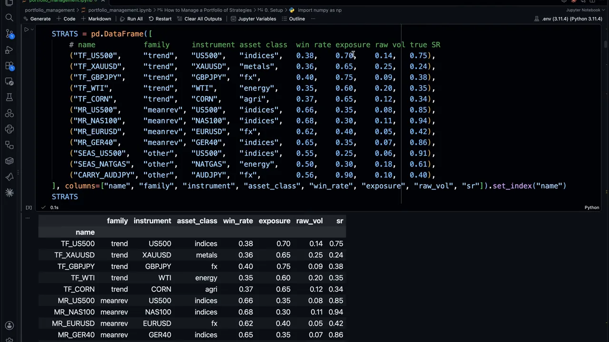
데이터는 두 단계로 만들어요.
- 전략을 하나씩 따로 만들어요 — 매일 시장에 있거나 쉬어요. 시장에 있는 날은 정해 둔 승률로 이기고, 이길 때와 질 때의 크기는 목표 샤프비율이 정확히 나오도록 맞춰요.
- 전략끼리 같이 움직이는 정도를 정해요 — 같은 종목, 같은 자산군, 같은 계열일수록 상관이 높도록 상관행렬을 만들고, 가우시안 코퓰라로 묶어요. 각 전략의 수익률 모양은 그대로 둬요.
- 현실처럼 흔들어요 — 상관관계가 시간에 따라 천천히 바뀌게 하고, 모든 게 함께 움직이는 위기 구간을 몇 번 넣어 폭락장을 흉내 내요.
만들어진 전략의 성격을 표로 확인해요. 맨 오른쪽 Skew 열은 왜도예요. 이 열을 보면 TF(추세추종)로 시작하는 줄은 양수, MR(평균회귀)로 시작하는 줄은 음수예요. 승률(Win rate)은 반대로 추세추종이 30%대, 평균회귀가 60%대예요.
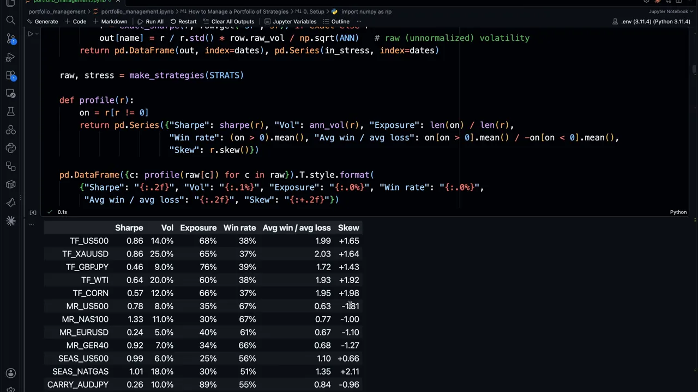
12개 전략의 누적 수익 곡선을 겹쳐 보면 기울기와 출렁임이 제각각이에요. 위로 크게 치솟는 주황·빨간 선이 있는가 하면 거의 평평하게 기어가는 선도 있어요.
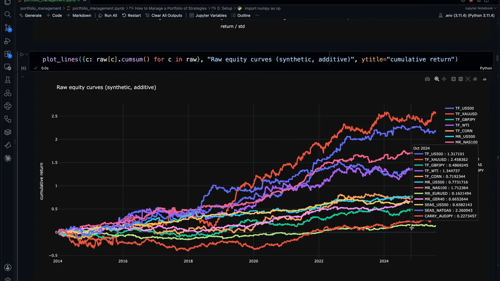
상관행렬에서는 대각선 근처에 진한 덩어리가 보여요. 같은 계열끼리 상관을 높게 만들었기 때문이에요. 계열이 달라도 같은 종목이면 상관이 높아요. S&P 500에 붙은 추세추종과 계절성 전략이 그런 예예요.
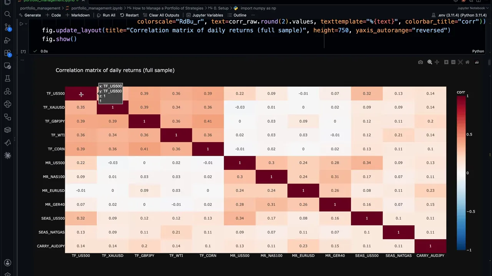
마지막 그래프는 전략 네 쌍의 3개월 롤링 상관이에요. 선들이 천천히 오르내리다가, 빨간 띠로 표시한 위기 구간에서 한꺼번에 치솟아요.
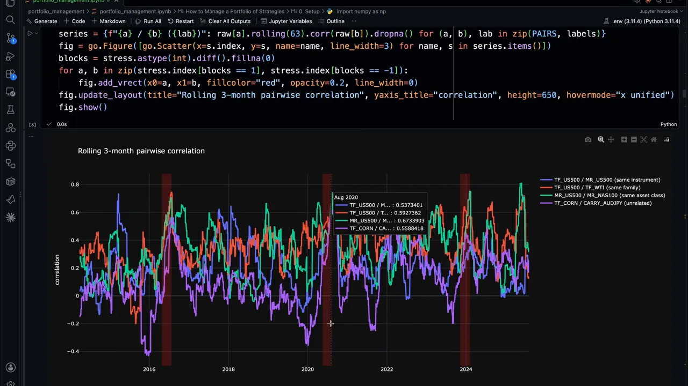
변동성 타기팅: 위험부터 맞춰요
비중을 이야기하기 전에 대부분이 건너뛰는 단계가 있어요. 아래 슬라이드의 세 전략은 연간 변동성이 A 6%, B 25%, C 12%예요. 같은 돈을 나눠 넣으면 그래프에서 가장 크게 출렁이는 빨간 선, 즉 B가 포트폴리오 등락을 거의 다 만들어요.
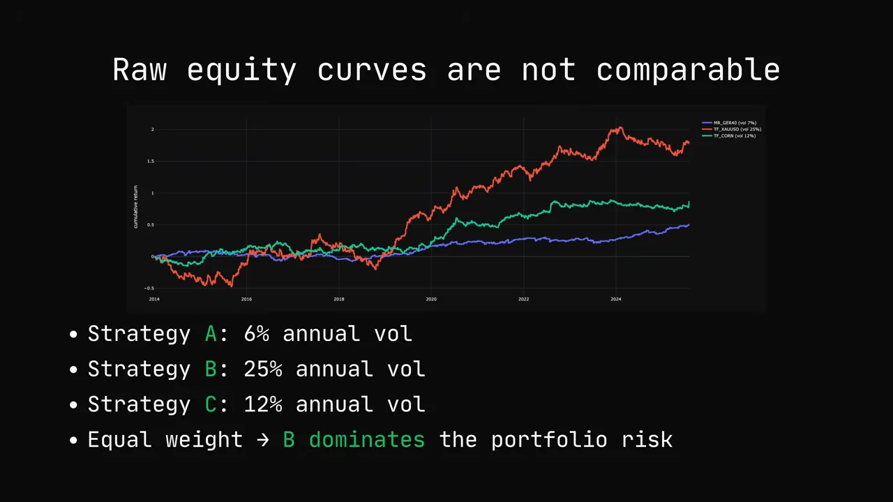
노트북에서도 확인해요. 세 전략에 돈을 3분의 1씩 넣었을 때 파란 막대(자본 비중)는 모두 같지만, 빨간 막대(위험 기여)는 가운데 금(XAUUSD(Gold price in US dollars)) 추세추종 하나가 70%를 넘어요. 이 전략의 연간 변동성이 25%라서 그래요.
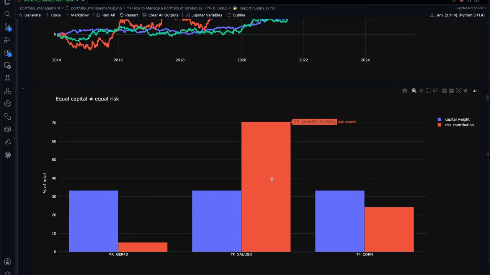
모든 전략을 같은 변동성으로 맞춰요
그래서 첫 번째 규칙은 위험을 같게 만들기 전에는 전략을 비교하거나 섞지 않는다는 거예요. 위험의 잣대는 연환산 변동성이에요. 슬라이드의 순서대로 하면 돼요.
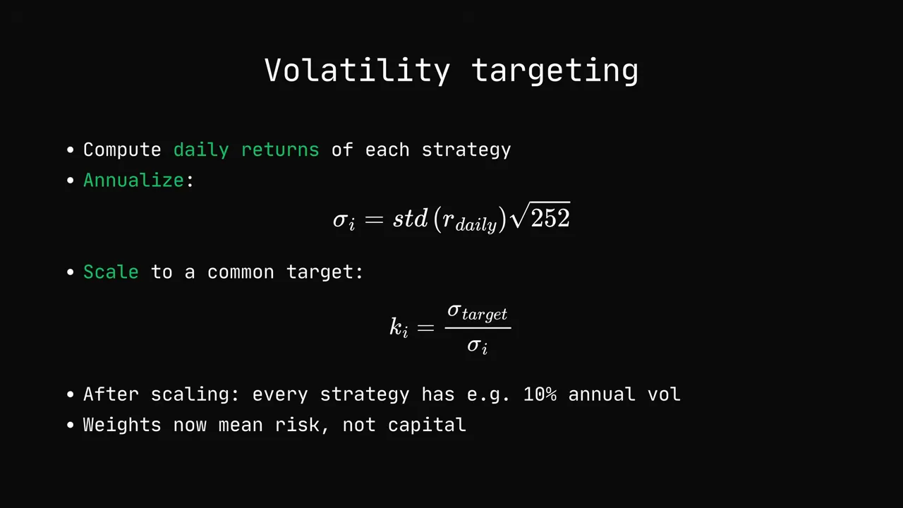
목표가 10%인데 전략이 20%로 움직이면 절반 크기로, 5%로 움직이면 두 배 크기로 거래해요. 거래별 수익이 아니라 일별 수익을 쓰는 이유도 있어요. 보유 기간과 거래 빈도가 이미 반영되기 때문이에요. 실제로 크기를 어떻게 조정하는지는 전략이 포지션 크기를 정하는 방식에 따라 두 갈래로 나뉘어요.
경우 1: 손절을 쓰고 거래당 위험을 정하는 전략
거래마다 자본의 몇 %를 걸지 정하는 방식이에요. 슬라이드 맨 위 공식 σ_annual ≈ r · σ_R · √n을 보면, 연간 변동성은 거래당 위험(r)만이 아니라 R 배수의 흩어짐(σ_R)과 1년 거래 횟수(n)에도 달려 있어요. 슬라이드 예시로는 똑같이 1%를 걸어도 1년 50번이면 약 10.6%, 200번이면 약 21.2%예요.
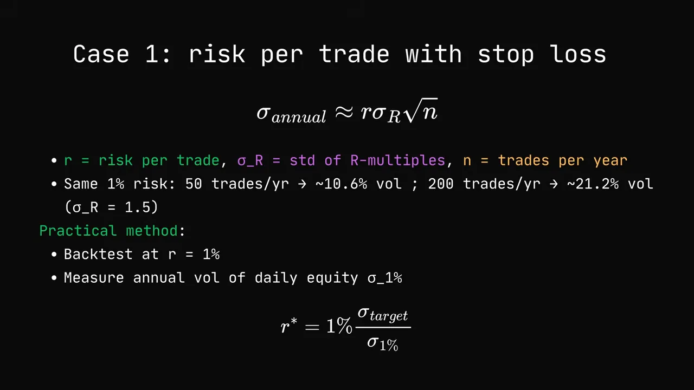
공식은 거래가 서로 독립이라고 가정하고 겹치는 포지션을 무시하니 근사치예요. 그래서 경험적으로 해요. 1% 위험으로 백테스트하고, 결과 곡선의 연간 변동성을 잰 다음, 목표에 맞게 거래당 위험을 비례로 늘리거나 줄여요. 수익은 위험에 거의 정비례하니 잘 맞아요. 예외는 뒤에서 다룰 랏 반올림이에요.
노트북의 아래 표에서 결과를 볼 수 있어요. 1년 50번 거래하는 전략은 1%일 때 변동성이 10.7%라서 거래당 위험을 0.93%로, 200번 거래하는 전략은 20.9%라서 0.48%로 낮춰요. 오른쪽 마지막 열을 보면 둘 다 10.0%가 돼요.
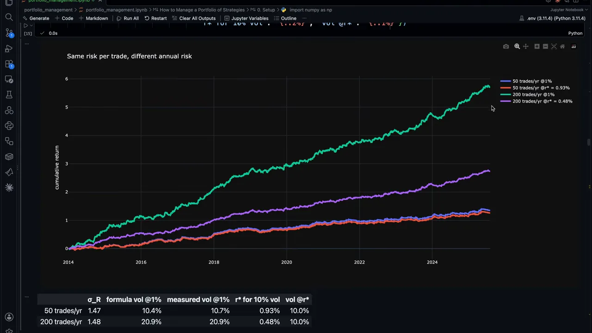
경우 2: 손절 없이 포지션 크기로 위험을 다루는 전략
신호가 +1(매수), −1(매도), 0(쉼)뿐인 단순한 전략이라고 해 볼게요. 신호가 켜지면 포지션 금액은 자본 × 목표 변동성 ÷ 종목 변동성이에요. 이 비율이 곧 레버리지예요. 종목이 1년에 20% 움직이고 목표가 10%면 자본의 절반, 5% 움직이면 자본의 두 배만큼 들고 있어요. 그다음 가격 × 1랏 가치로 나눠 랏 수를 구해요.
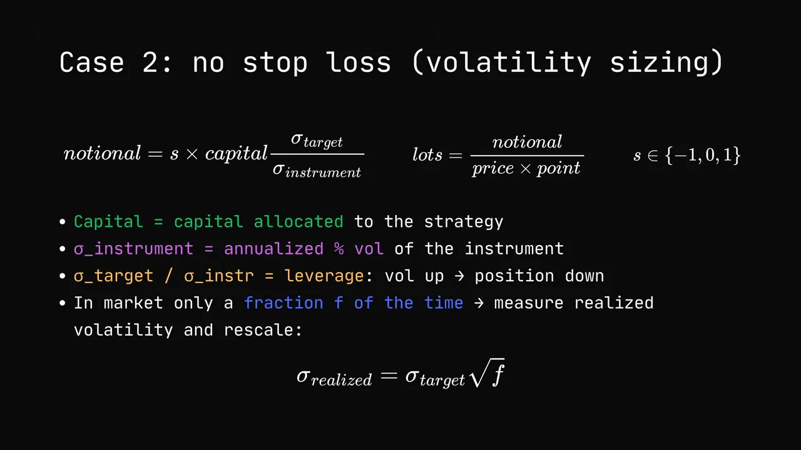
한 가지 함정이 있어요. 이렇게 하면 포지션을 들고 있는 동안만 목표 변동성이 나와요. 시장에 있는 시간이 40%라면 실제 연간 변동성은 목표 × √0.4, 즉 목표의 약 63%예요. 그래서 여기서도 마지막에 실제 변동성을 재서 다시 맞춰요.
노트북 그래프의 위쪽 파란 선은 종목 자체의 변동성이에요. 아래쪽 빨간 선은 고정 금액으로 들고 있을 때, 초록 선은 변동성에 맞춰 크기를 조정했을 때의 전략 변동성이에요.
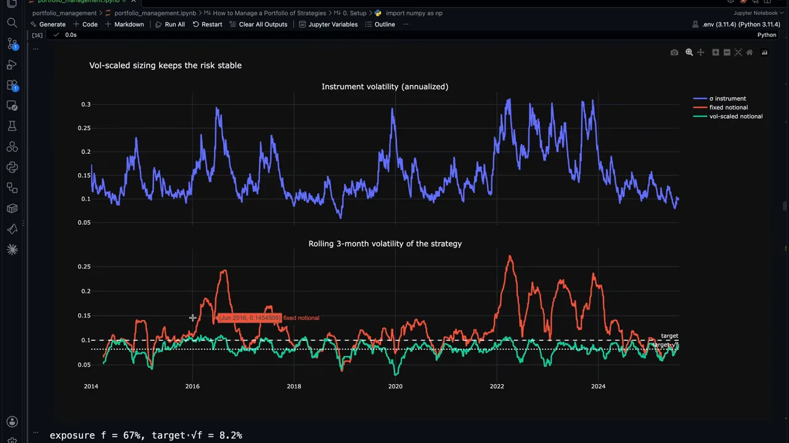
두 경우 모두 결론은 같아요. 모든 전략이 같은 연간 위험으로 돌게 만드는 거예요.
비중 정하는 방식과 발표자의 공식
전략들의 위험을 맞췄으면 이제 비중을 정해요. 슬라이드 표는 주요 방식을 데이터에서 무엇을 꺼내 쓰는지(uses), 장점(pros), 단점(cons)으로 정리해요. 글씨가 작아서 아래에 한국어로 옮겼어요.
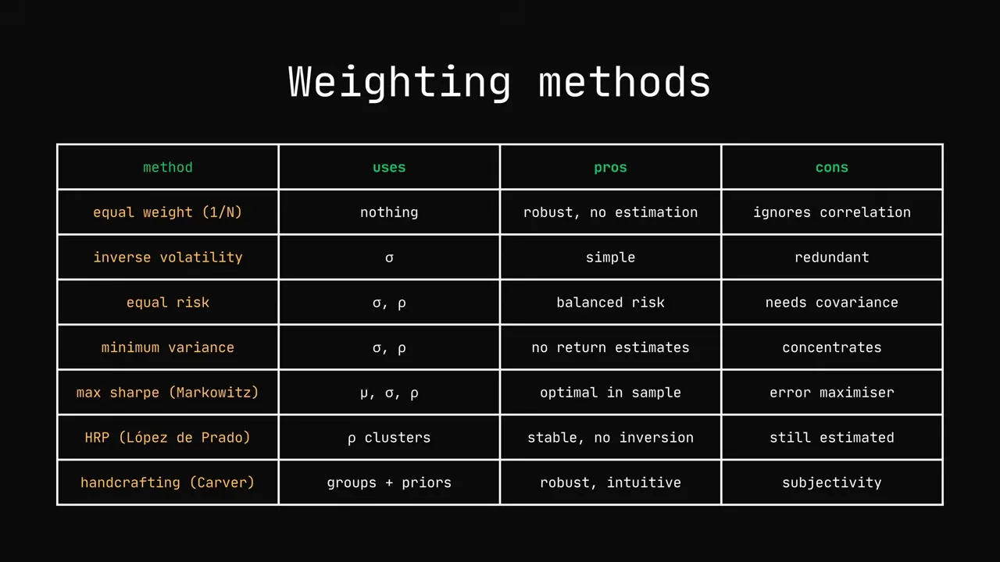
| 방식 | 쓰는 정보 | 장점 | 단점 |
|---|---|---|---|
| 균등 가중 (1/N) | 없음 | 튼튼하고 추정할 게 없어요 | 상관관계를 무시해요 |
| 역변동성 | 변동성 σ | 단순해요 | 변동성을 맞춘 뒤엔 의미가 없어요 |
| 위험 균등 (ERC(Equal Risk Contribution)) | σ, 상관 ρ | 위험이 고르게 나뉘어요 | 공분산이 필요해요 |
| 최소분산 | σ, ρ | 기대수익을 추정하지 않아요 | 한쪽으로 쏠려요 |
| 최대 샤프 (마코위츠) | 기대수익 μ, σ, ρ | 표본 안에서는 최적이에요 | 오차를 최대로 키워요 |
| HRP(Hierarchical Risk Parity) (로페스 데 프라도) | ρ로 묶은 무리 | 안정적이고 역행렬이 필요 없어요 | 여전히 추정이에요 |
| 핸드크래프팅 (카버) | 묶음 + 사전 판단 | 튼튼하고 직관적이에요 | 주관이 들어가요 |
발표자의 요점은 한 문장이에요. 데이터에서 더 많은 정보를 쓰면 좋아 보이지만, 추정하는 숫자 하나하나가 틀릴 수 있는 숫자라는 거예요. 특히 기대수익을 쓰는 순간 문제가 시작된다고 말해요.
노트북에서 전체 기간으로 각 방식의 비중을 구해 보면 차이가 확 드러나요. 전략마다 막대 여섯 개가 서 있는데, 그중 주황 막대(최대 샤프)만 몇몇 전략에서 20%를 훌쩍 넘고 다른 전략에서는 0에 가까워요.
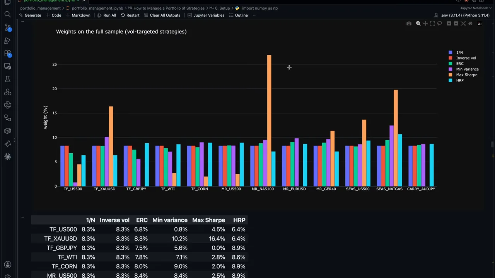
효율적 투자선 그래프는 연환산 변동성(가로)과 연환산 수익(세로)을 같이 그려요. 개별 전략은 모두 변동성 10% 근처에 세로로 늘어서 있고, 포트폴리오 방식들은 왼쪽 아래 약 4.7% 변동성 근처에 모여 있어요. 오른쪽 확대 그림에서 보면 최대 샤프만 수익이 조금 더 높은 위쪽으로 떨어져 있어요.
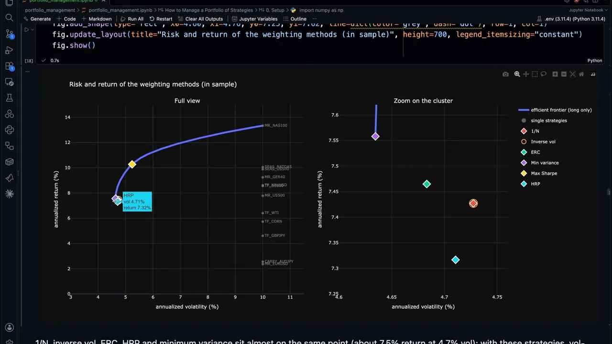
발표자가 실전에서 쓰는 공식
발표자는 실전 포트폴리오에서 균등 가중에 상관 보정을 더한 공식을 써요. 모든 전략이 이미 같은 목표 변동성이니 균등 가중이 곧 위험 균등이에요. 문제는 그냥 N으로 나누면 전략들이 완전히 같이 움직이지 않아서 포트폴리오 변동성이 목표보다 한참 낮아진다는 거예요. 슬라이드의 공식이 그걸 목표까지 되돌려요.
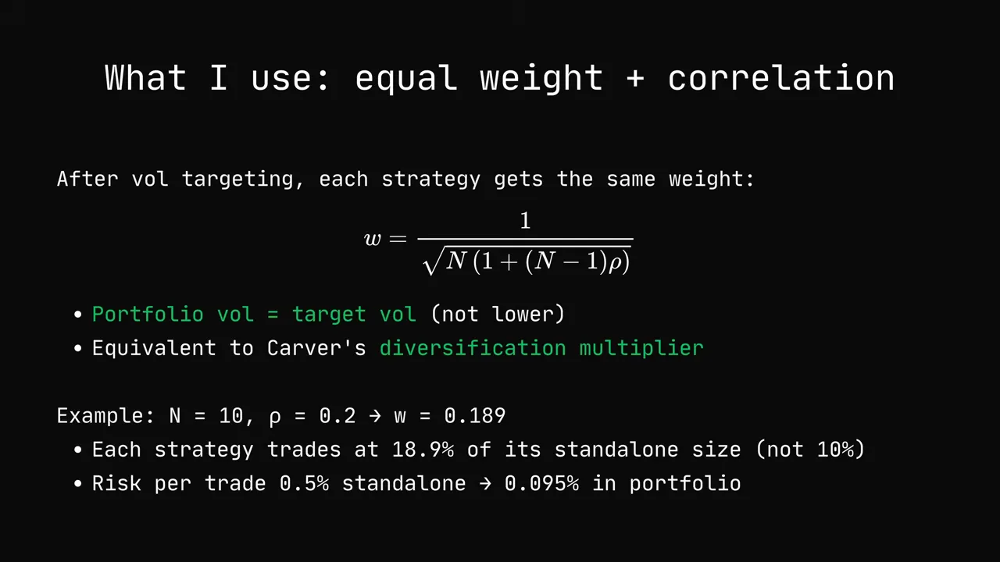
이 공식은 카버의 분산 배수를 N으로 나눈 것과 수학적으로 같아요. 실무로 옮기면, 단독으로 거래당 0.5%를 거는 전략이 포트폴리오 안에서는 약 0.095%를 걸고, 포트폴리오 전체는 변동성 10%로 돌아요. 노트북 예시(전략 12개, 평균 상관 0.15)에서는 비중이 약 0.176으로, 그냥 1/N인 0.083의 두 배쯤이에요. 거래당 0.5%는 0.088%가 돼요.
아래에서 N과 ρ를 바꿔 보면 공식이 어떻게 움직이는지 볼 수 있어요. 계산식은 영상 슬라이드의 세 공식(비중, 분산 배수, 포트폴리오 샤프) 그대로예요.
전략당 비중 0 (그냥 1/N이면 0)
분산 배수 0
포트폴리오 안 거래당 위험 0%
포트폴리오 샤프 (전략 샤프 0.5 가정) 0
포트폴리오 변동성 (전략 목표 10%) 0%
- N=10, ρ=0.2, 위험 0.5%에 두면 비중 0.189, 거래당 약 0.0945%로 슬라이드 예시(0.095%)가 그대로 나와요.
- ρ를 0.15, N을 12로 바꿔 보세요. 노트북 예시처럼 비중이 약 0.176, 거래당 위험이 약 0.088%가 돼요.
- ρ를 0으로 내리고 N을 키워 보세요. 비중(레버리지)이 커져요. 뒤에서 말하는 '상관이 낮을수록 위험해지는' 이유예요.
- N을 3으로 내린 뒤 최소 N을 켜 보세요. 비중이 줄고 포트폴리오 변동성이 목표보다 낮아져요. 발표자가 실전에서 쓰는 안전장치예요.
최적화도 과적합이에요
그냥 최적화기를 돌려 샤프비율을 최대로 만들면 안 될까요? 발표자의 답은 포트폴리오 최적화 자체가 또 하나의 과적합이라는 거예요. 슬라이드에는 근거가 네 줄로 정리돼 있어요.
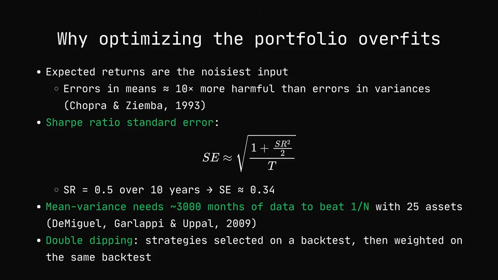
- 기대수익이 가장 시끄러운 입력이에요. 평균의 오차는 분산의 오차보다 약 10배 해로워요(Chopra & Ziemba, 1993).
- 샤프비율은 생각보다 부정확해요. 10년 데이터로 잰 샤프 0.5의 표준오차가 약 0.34라서, 백테스트 샤프 0.5와 0.9는 통계로 거의 구분이 안 돼요. 최적화기는 그걸 모르고 표본 안에서 운이 좋았던 전략에 큰 비중을 줘요.
- 평균-분산 최적화는 표본 밖에서 1/N을 꾸준히 이기지 못해요. 슬라이드는 자산 25개면 약 3,000개월 데이터가 있어야 1/N을 이긴다고 적어요(DeMiguel, Garlappi & Uppal, 2009).
- 이중 사용 문제가 있어요. 백테스트가 좋아서 고른 전략을 같은 백테스트로 다시 비중을 매기면, 선택 편향 위에 선택 편향이 쌓여요.
노트북으로 본 추정 오차
노트북은 같은 공식으로 계산해 봐요. 10년이면 0.34, 워크포워드 표본 안 창 하나 길이인 3년이면 0.63이에요. 95% 신뢰구간으로 보면 10년 데이터로도 대략 −0.1에서 1.1 사이라서, 엣지가 잡음과 구분되지 않아요.
아래 그래프는 진짜 샤프가 0.2~1.0으로 고정된 전략들의 1년 단위 샤프를 연도별로 찍은 거예요. 초록 점선이 평균 진짜 샤프인데, 점들은 그 위아래로 −2에서 3 가까이까지 흩어져 있어요.
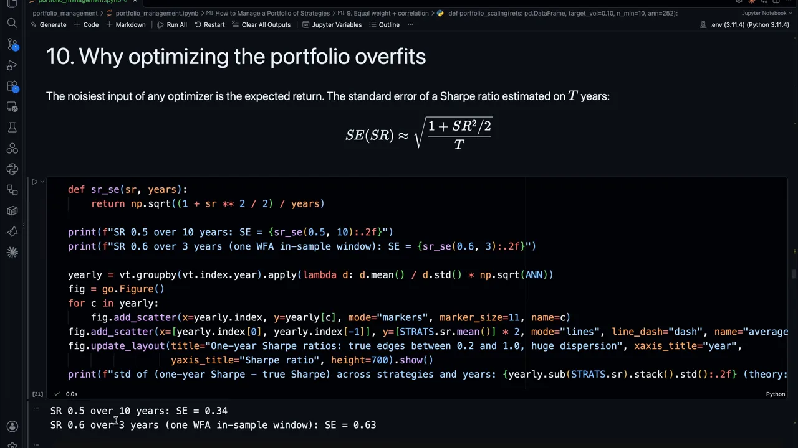
최대 샤프 방식으로 3년 창마다 비중을 다시 구하면 결과가 이래요. 막대 하나가 한 시점의 비중 구성(합계 100%)인데, 색 배치가 해마다 통째로 바뀌어요.
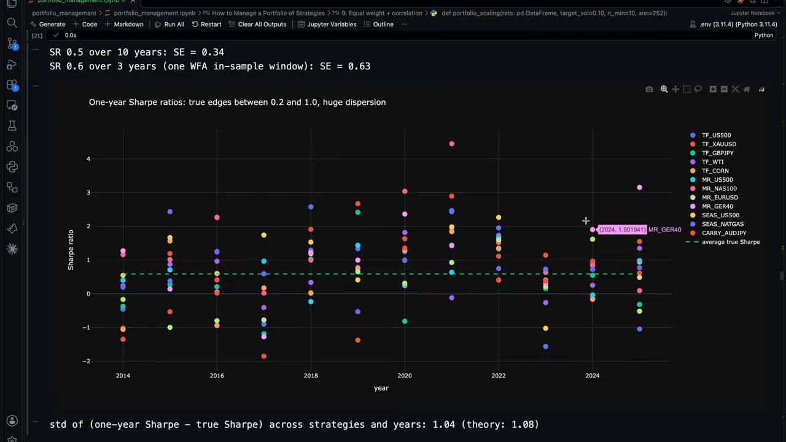
진짜 샤프와 최적화기가 준 평균 비중을 견줘 보면 상관은 있지만 느슨해요(순위 상관 0.48). 노트북 설명에 따르면 진짜 샤프 0.75인 S&P 500 추세추종은 4%밖에 못 받았고, 진짜 샤프가 가장 낮은(0.24) 금 추세추종은 14%를 받았어요. 1/N(8.3%)보다 한참 많은 셈이에요. 최적화기가 신호의 일부와 잡음의 상당 부분을 함께 집어 든 거예요.
포트폴리오 워크포워드
그럼 어떤 최적화 방식이 정말 도움이 되는지는 어떻게 알까요? 전략을 검증할 때와 같은 방법, 워크포워드예요. 슬라이드의 초록 막대가 비중을 추정하는 표본 안 창, 보라 막대가 그 비중을 그대로 적용해 보는 다음 기간이에요. 창이 오른쪽으로 한 칸씩 밀려요.
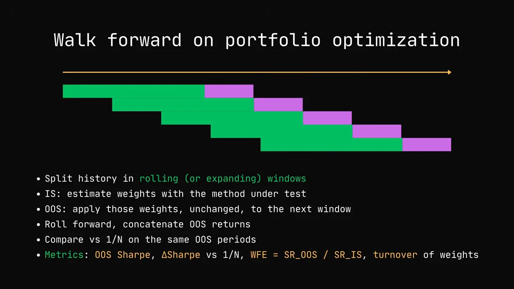
- 과거 창에서 비중을 정해요 — 시험할 방식으로 추정해요.
- 그 비중을 고정한 채 다음 기간에 적용해요 — 한 번도 보지 않은 구간이에요.
- 앞으로 굴려 반복하고, 표본 밖 구간만 이어 붙여요 — 배분 방식의 정직한 수익 곡선이 나와요.
- 같은 표본 밖 구간의 1/N과 비교해요 — 1/N을 못 이기면 그 최적화는 잡음을 맞춘 것뿐이에요.
발표자는 이 발상이 문헌에도 있고, DeMiguel 등이 배분 방식을 평가한 방법과 사실상 같다고 말해요. 비중이 창마다 크게 튀는 것도 그 자체로 경고 신호예요.
노트북 결과: 최대 샤프가 가장 나빴어요
노트북은 3년 표본 안, 1년 표본 밖으로 돌려요. 아래 표에서 Sharpe IS(표본 안)와 Sharpe OOS(표본 밖), WFE(효율) 열을 나란히 보면 돼요.
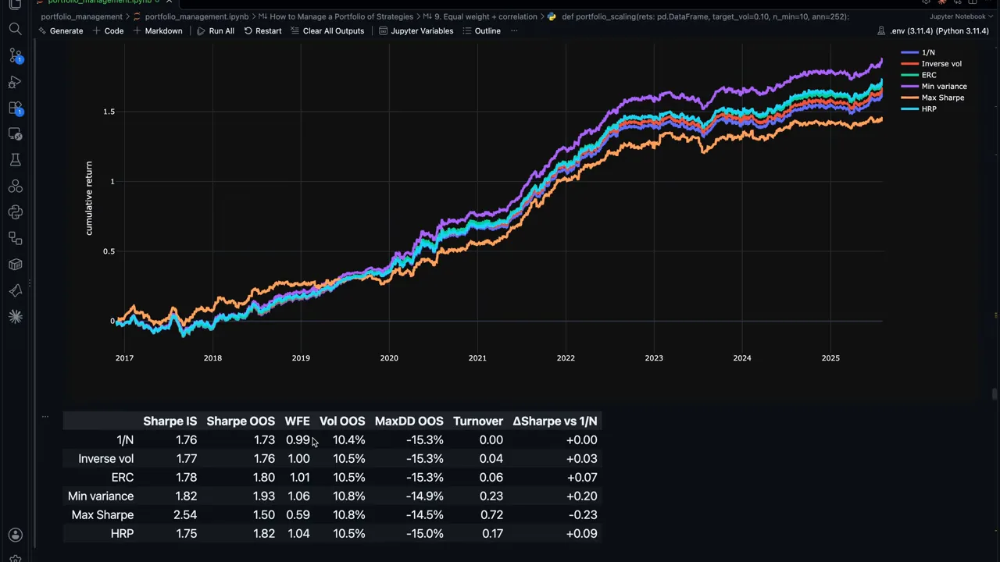
| 방식 | 표본 안 샤프 | 표본 밖 샤프 | 효율 | 회전율 | 1/N 대비 |
|---|---|---|---|---|---|
| 1/N | 1.76 | 1.73 | 0.99 | 0.00 | +0.00 |
| 역변동성 | 1.77 | 1.76 | 1.00 | 0.04 | +0.03 |
| ERC | 1.78 | 1.80 | 1.01 | 0.06 | +0.07 |
| 최소분산 | 1.82 | 1.93 | 1.06 | 0.23 | +0.20 |
| 최대 샤프 | 2.54 | 1.50 | 0.59 | 0.72 | −0.23 |
| HRP | 1.75 | 1.82 | 1.04 | 0.17 | +0.09 |
이 차이가 진짜인지 보려고 1/N 대비 샤프 차이를 부트스트랩해요. 가운데 점선이 1/N(차이 0)이에요. 초록 분포(최대 샤프)는 넓게 왼쪽으로 퍼져 있고, 나머지 분포는 점선 오른쪽에 좁게 모여 있어요.
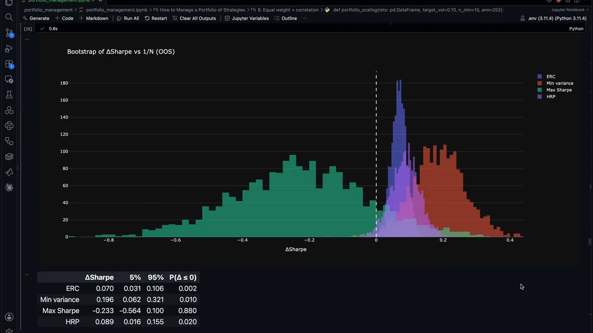
공분산 기반 세 방식(ERC, 최소분산, HRP)은 이 시뮬레이션에서 1/N보다 통계적으로 나았어요. 최대 샤프는 1/N보다 못했지만 그 차이는 통계적으로 뚜렷하지 않았어요. 기간으로 나눠 보면 세 방식은 날짜 기준 81~89% 동안 1/N 위에 있었고, 최대 샤프는 39%뿐이었어요.
달력 연도별 표본 밖 샤프를 상자 그림으로 그려도 비슷해요. 화면 하단 출력에 각 방식이 1/N을 이긴 해의 수가 찍혀 있어요.
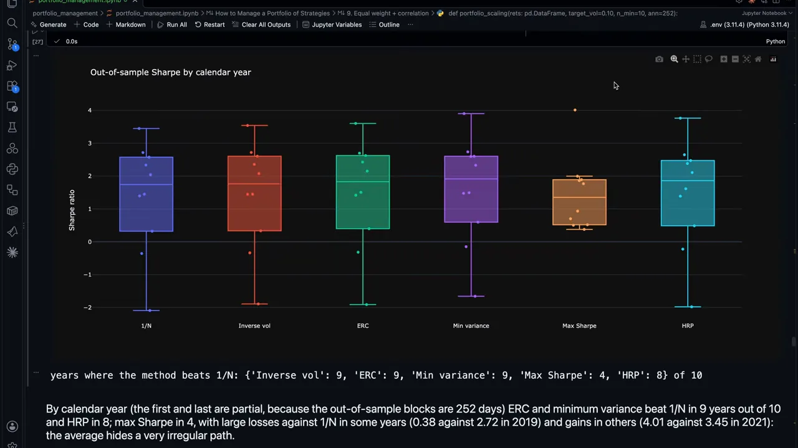
발표자의 해석은 조심스러워요. 이 가상 데이터는 상관관계가 천천히 바뀌게 만들었으니, 공분산 기반 방식이 표본 안에서 상관을 잘 추정해 표본 밖에서 써먹을 수 있었던 거예요. 실제 전략과 실제로 흔들리는 상관에서도 그렇다는 보장은 없어요.
숨은 함정: 입력이 이미 과적합이면 소용없어요
대부분의 포트폴리오 워크포워드를 쓸모없게 만드는 함정이 있어요. 슬라이드 첫 줄이 그 얘기예요.
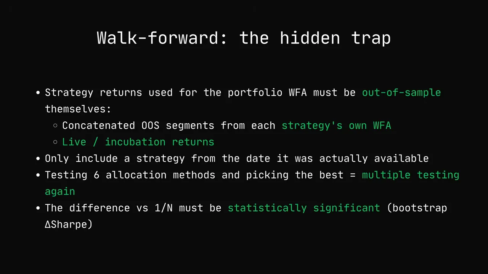
- 워크포워드에 넣는 전략 수익률이 표본 안 백테스트라면, 비중을 아무리 조심스럽게 굴려도 입력이 이미 과적합이에요. 각 전략의 자체 워크포워드 표본 밖 수익이나 실전 수익을 넣어요. 워크포워드 위에 워크포워드를 얹는 셈이에요.
- 전략은 그 전략을 실제로 알 수 있었던 날부터만 포트폴리오에 넣어요.
- 배분 방식 6개를 시험해 가장 좋은 걸 고르면 새 선택 편향이 생겨요. 1/N 대비 개선이 유의한지 부트스트랩 등으로 확인해요.
노트북은 이걸 극단적인 실험으로 보여 줘요. 엣지가 전혀 없는 전략 40개를 만들고, 파란 선은 전체 기간을 보고 10개를 고른 경우, 빨간 선은 표본 안 창만 보고 고른 경우예요. 워크포워드 절차는 둘이 똑같아요.
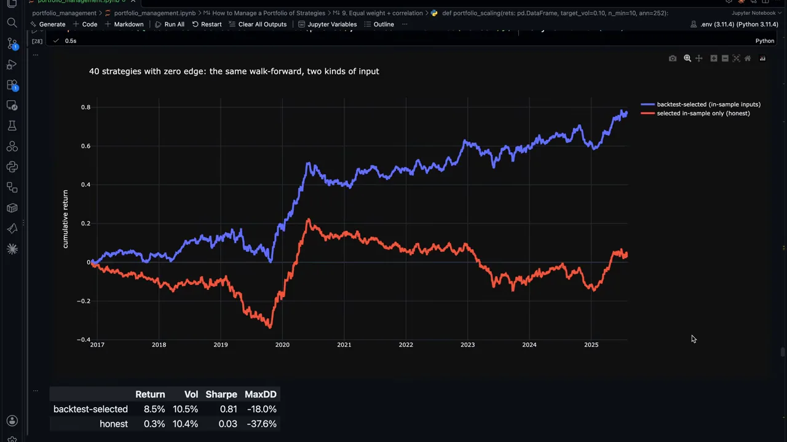
전략 계열·종목 균형과 상관관계 변화
균등 가중에는 약점이 있어요. '전략'에 고르게 나눌 뿐 '아이디어'에 고르게 나누지는 않아요. 추세추종 전략이 8개, 평균회귀가 2개면 위험의 80%가 추세추종에 실려요. 단지 추세추종을 더 많이 만들었다는 이유만으로요.
해법은 계열별 몫을 미리 정하는 거예요. 슬라이드 표대로 추세추종 40%, 평균회귀 40%, 나머지(계절성·캐리·머신러닝) 20%를 주고, 각 묶음 안에서는 균등 가중을 한 다음 포트폴리오 전체에 상관 보정을 적용해요.
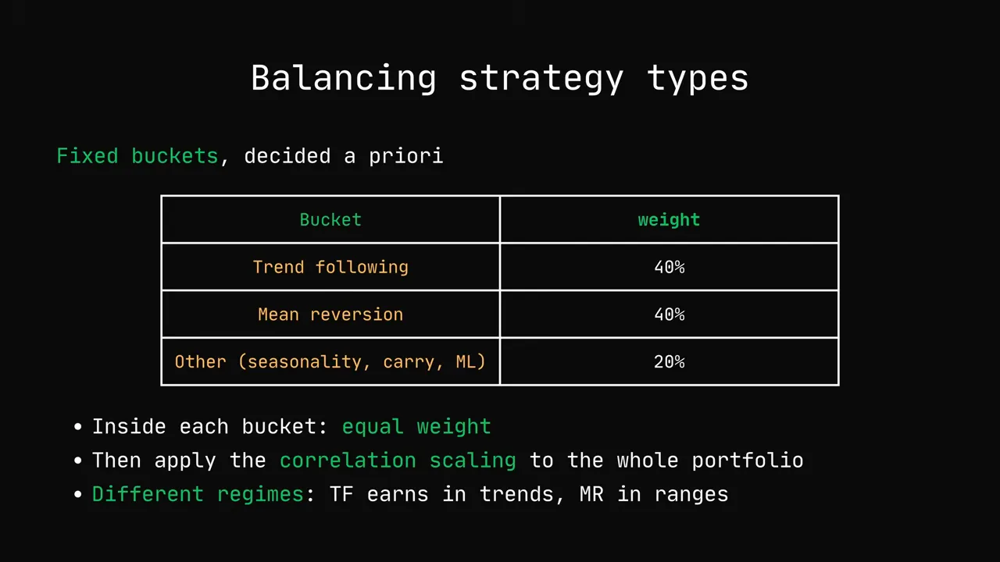
이 몫은 데이터에서 추정한 숫자가 아니라서 과적합될 수 없어요. 발표자는 바로 그게 핵심이고, 카버의 핸드크래프팅이 가진 핵심 아이디어라고 말해요. 노트북에서 1/N과 40/40/20 묶음을 비교하면, 파란 막대(1/N)는 추세추종(trend)이 47%로 가장 크고 빨간 막대(묶음)는 평균회귀 40%, 추세추종 43%로 더 고르게 바뀌어요.
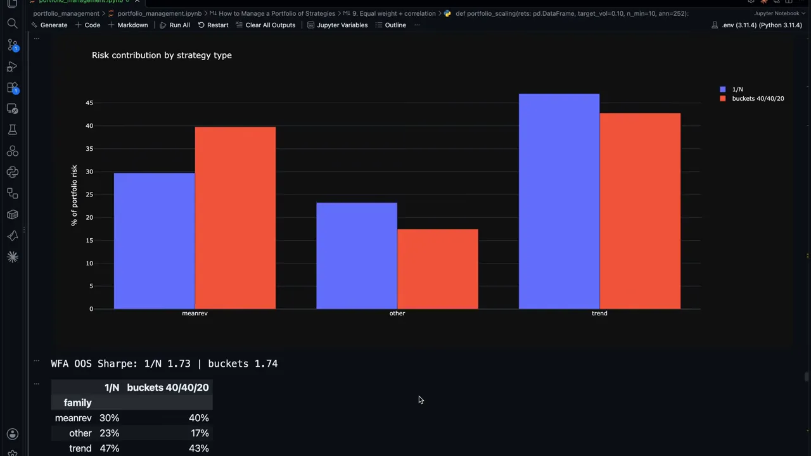
종목과 자산군도 같은 논리예요
전략이 10개여도 그중 4개가 S&P 500을 거래하면 생각보다 훨씬 쏠려 있어요. 주식이 나쁜 날엔 평균 상관이 낮아 보였어도 함께 잃을 수 있어요. 슬라이드의 왼쪽 파란 막대는 종목별, 오른쪽 빨간 막대는 자산군별 위험이고, 맨 왼쪽 막대가 유난히 높아요.
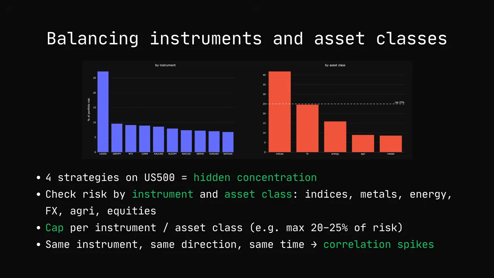
노트북 화면이 숫자를 더 자세히 보여 줘요. S&P 500(US500(US 500 stock index, S&P 500))이 종목 중 가장 큰 몫을 차지하고, 자산군으로는 주가지수(indices)가 40%를 넘어 25% 상한선(점선)을 크게 넘어요.
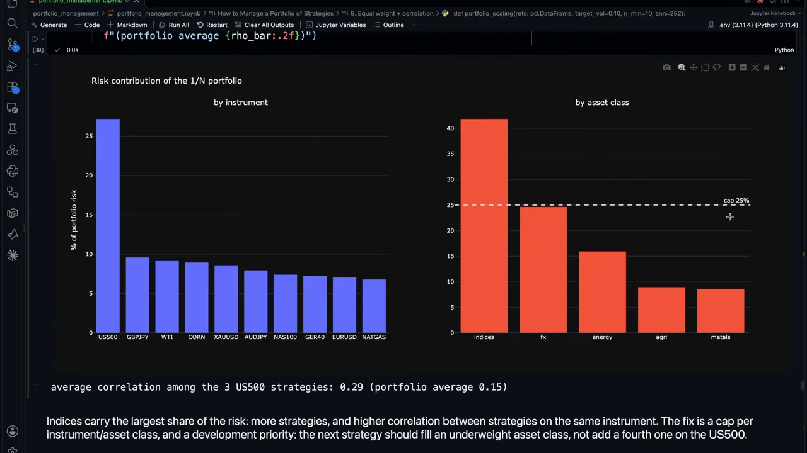
그래서 일의 일부는 같은 지수에 다섯 번째 전략을 얹는 대신, 비중이 모자란 곳을 채우는 새 전략을 만드는 거예요.
상관관계는 안정적이지 않아요
상관 공식에는 숨은 위험이 있어요. 상관이 낮을수록 전략당 비중이 커지고, 각 전략에 레버리지를 더 거는 셈이 돼요. 상관이 계속 낮으면 괜찮지만, 상관은 모든 게 함께 팔리는 시장 스트레스 때 정확히 치솟아요. 슬라이드 그래프의 빨간 띠가 그 위기 구간이에요.
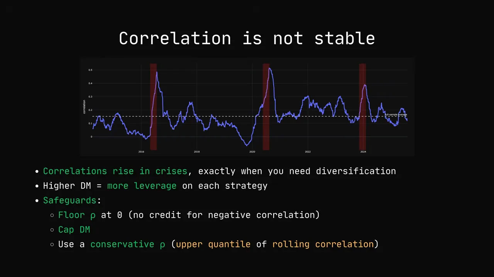
- 평균 상관이 0 아래로 내려가지 않게 막아요. 음의 상관에 점수를 주지 않아요.
- 분산 배수에 상한을 둬요. 카버는 2.5로 묶어요.
- 전체 기간 평균 대신 롤링 상관의 높은 분위수 같은 보수적인 값을 써요.
노트북은 위기 구간 하나를 확대해 두 가지 상관 값을 비교해요. 파란 선은 평균 상관 0.15를, 빨간 선은 보수적인 값 0.28을 쓴 포트폴리오의 1개월 실현 변동성이에요. 점선이 목표 10%예요.
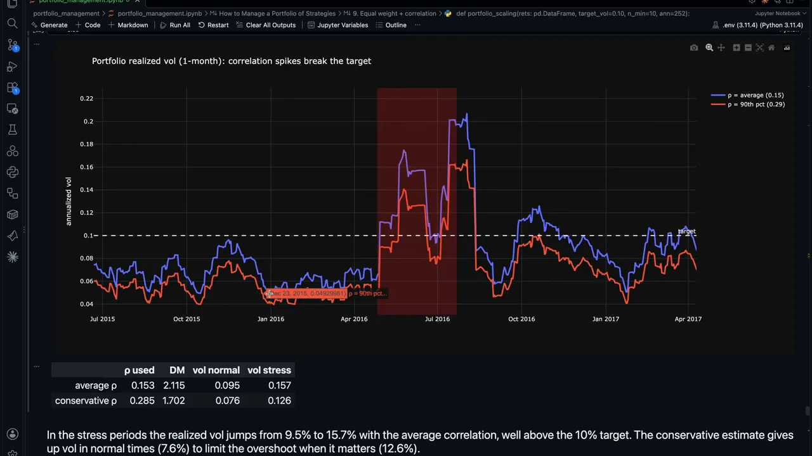
실전 문제와 목표 변동성 고르기
발표자가 실제로 운용하며 부딪힌 문제 세 가지와, 맨 처음 정해야 하는 목표 변동성 이야기로 마무리해요. 슬라이드는 문제를 세 덩어리로 묶어요.
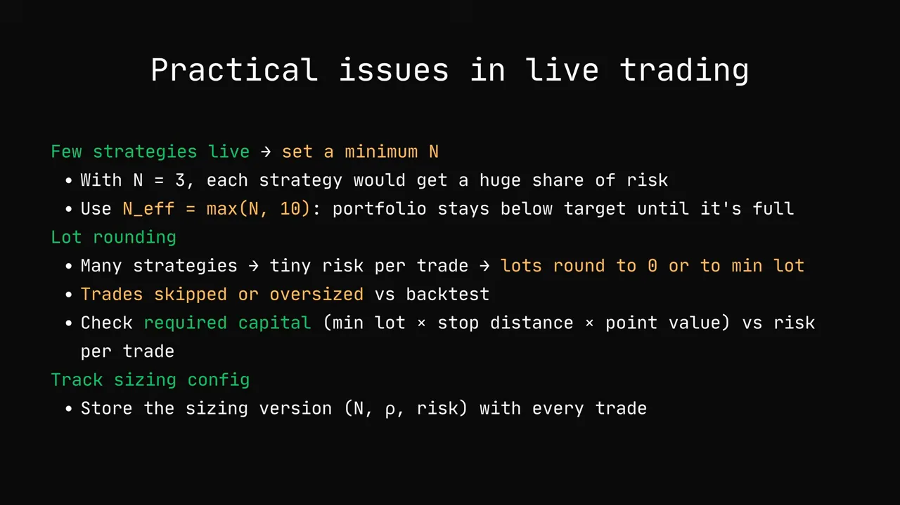
전략이 적을 땐 최소 N을 둬요
점검하느라 몇 개를 빼서 전략이 3개만 살아 있다면, 공식은 각자에게 아주 큰 비중을 줘요. 진짜 분산이 없는데 위험만 커지는 거예요. 전략 하나에 알파 소멸이나 체결 문제가 생기면 포트폴리오 전체가 크게 흔들려요. 그래서 발표자는 N_eff = max(N, 10)을 써요. 10 대신 15를 골라도 돼요.
노트북의 왼쪽 그래프는 살아 있는 전략 수에 따른 전략당 비중이에요. 파란 선(그냥 N)은 전략이 적을수록 급격히 치솟고, 초록 선(최소 N 적용)은 10개까지 낮게 평평해요. 오른쪽은 포트폴리오 변동성이에요.
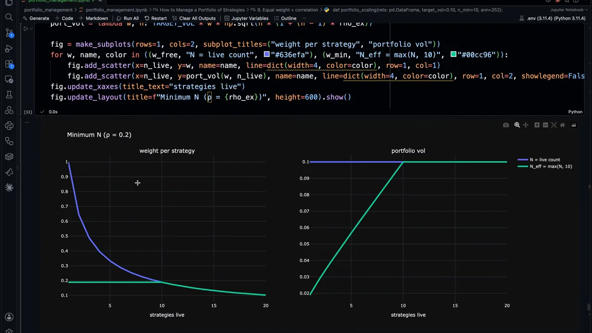
랏 반올림: 작은 계좌일수록 거래가 사라져요
전략을 많이 둘수록 전략당 거래 위험이 작아져요. 최소 랏이 0.01이면 어떤 거래는 0으로 내려가 건너뛰어지거나, 반대로 최소 랏으로 올려져 의도보다 커져요. 그러면 실전 결과가 백테스트에서 벗어나요.
노트북은 거래당 위험 0.5%, 상관 0.2, 손절 거리 0.4 ATR(Average True Range), 1랏을 손절까지 잃으면 평균 1,000유로가 드는 상황을 가정하고 1만, 10만 계좌를 비교해요. 파란 막대가 1만 계좌, 빨간 막대가 10만 계좌에서 건너뛴 거래 비율이에요.
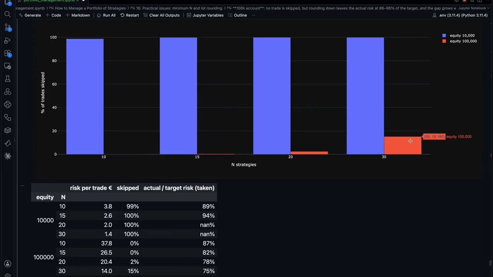
처음 설정(0.5%)에서는 1만 계좌·전략 10개면 거래의 약 47%가 빠지고, 30개면 전부 빠졌어요. 10만 계좌는 어느 경우에도 빠지는 거래가 없었어요. 계좌가 크면 작게 거래할 수 있어 전략을 더 많이 둘 수 있다는 뜻이에요. 그래서 전략 수를 정할 때 계좌 크기도 함께 따져야 해요. 종목마다 최소 포지션이 자기 자본에서 몇 %의 위험인지 미리 확인해 두라는 게 발표자의 조언이에요.
세 번째는 기록이에요. 거래마다 어떤 크기 설정(N, ρ, 위험)이 적용됐는지 남겨 둬야 나중에 무엇이 돌고 있었는지 재구성할 수 있어요. 발표자는 이걸 매직 넘버에 담아요.
목표 변동성은 어떻게 고를까요
마지막 결정은 목표 변동성이에요. 슬라이드는 이걸 전략이 아니라 포트폴리오 차원의 결정으로 둬요.
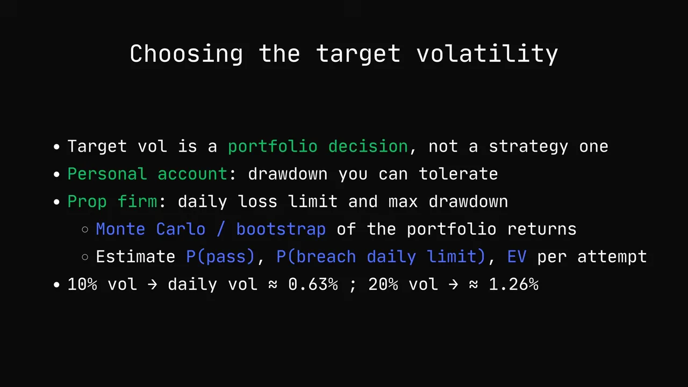
개인 계좌라면 감정적으로나 재정적으로 견딜 수 있는 낙폭이 기준이에요. 프롭 펌 계좌라면 일일 손실 한도와 최대 낙폭 규칙이 정해 줘요. 올바른 방법은 짐작이 아니라 포트폴리오 수익률을 부트스트랩해 챌린지를 여러 번 시뮬레이션하는 거예요. 통과 확률, 일일 손실 한도에 걸릴 확률, 시도당 기대값을 구해요. 두꺼운 꼬리와 상관 급등 때문에 실제 나쁜 날은 정규분포가 말하는 것보다 더 나빠서, 공식보다 실제 수익률로 하는 시뮬레이션이 낫다고 해요.
노트북은 수익 목표 10%, 최대 손실 10%, 일일 손실 5%, 120거래일 조건으로 돌려요. 막대 하나가 연 목표 변동성 하나이고, 초록이 통과, 빨강과 주황이 손실 한도 위반, 회색이 기한 안에 결판나지 않은 경우예요.
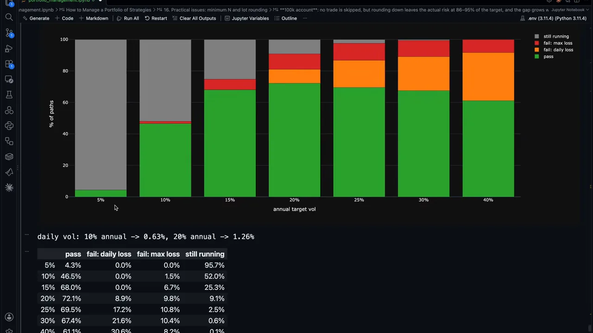
그러니 자기 조건으로 이런 시뮬레이션을 돌려 최적의 연 변동성을 정해야 해요. 지금까지의 과정을 한 줄로 이으면 아래와 같아요. 영상 마지막 요약 슬라이드의 순서를 그대로 옮겼어요.
flowchart TD A["목표 변동성 정하기
(낙폭 감내 · 프롭 펌 규칙)"] --> B["전략마다 변동성 맞추기
(손절형 · 크기 조정형)"] B --> C["계열 · 종목별 몫 미리 정하기
(예: 40/40/20, 자산군 상한)"] C --> D["균등 가중 + 상관 보정
w = 1/√(N(1+(N−1)ρ))"] D --> E["안전장치
ρ 하한 · 분산 배수 상한 · 최소 N · 랏 점검"] D -.-> F["최적화기를 쓰려면
표본 밖 수익으로 워크포워드, 1/N과 비교"]